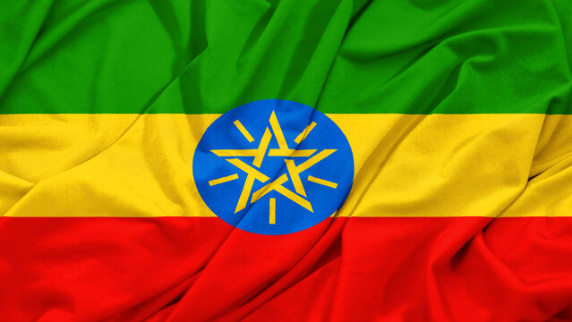

Ethiopia is a country in East Africa. Ethiopia is home to about 138 million people and is the 10th most populated country in the world. The capital city of Ethiopia is Addis Ababa. Ethiopia is known for its diverse landscapes, including mountains, deserts, and lakes. The country has a long history, with evidence of human habitation dating back over 3 million years. Ethiopia is also famous for its coffee, which is considered some of the best in the world. The country has a unique calendar and time system, and it is one of the few African countries that was never colonized.
